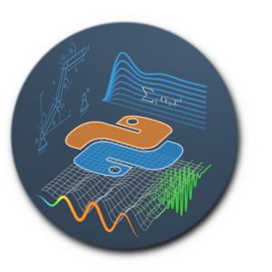

PySaar 2024 – Python Course for Engineering

Save the date:
April 2nd - 4th 2024, Universität des Saarlandes, Chair of Modeling and Simulation.
Contents:
- Python scripts and Jupyter Notebooks,
- Basic numeric computation,
- Simulation and optimization,
- Symbolic computation,
- Visualization
Lecturers:
- Carsten Knoll, Dr.-Ing., TU Dresden
- Amine Othmane, Dr.-Ing., Univ. d. Saarl.
More information follows soon.